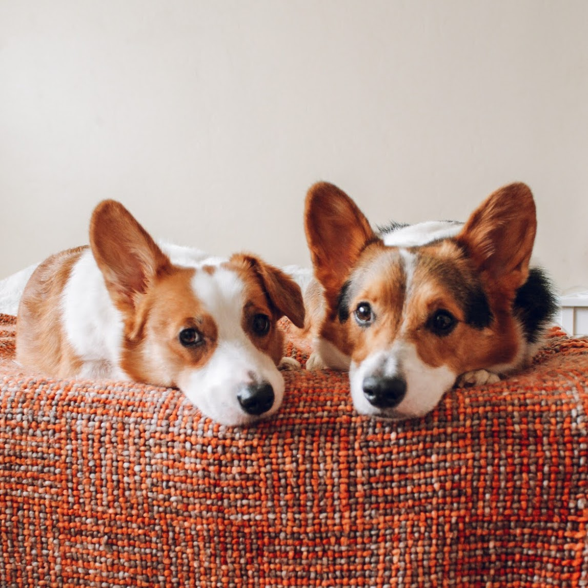
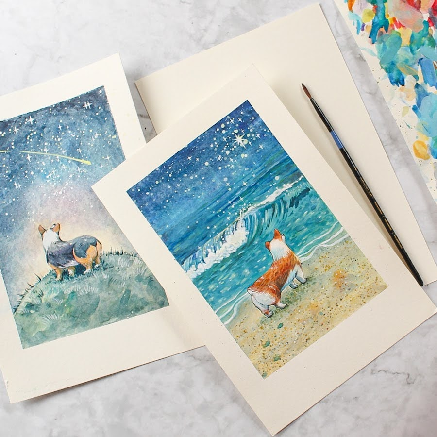

Hello! Nice to meet You!
.JPG)
Things I Would Love to Learn:
- HTML
- CSS
- JavaScript
- WordPress
Hi, my name is Sofya and I am a recent graduate of Mesa College with an associate degree in Animal Health Science. Even though I love animals and am passionate about their well being I discovered that it might not be the career path I want to take. I have two corgis named Ginger and Barry(who is a cancer survivor) and a cat who’s name is Freddie Mercury(and who I adopted from Mesa College Veterinary program).
I have little experience in web design, but I am very interested in learning more. I enjoy building things with code and have some experience with HTML and CSS. The resources that have helped me to gain some web design skills are Free Code Camp, w3schools, YouTube and my husband, who works in Web Development. I am taking this course because I think this is a great way to gain more knowledge in web design for me at this point.
I was born and raised in Russia, but for the last 14 years I have been living in San Diego. In my free time I enjoy painting and reading. I really like visual arts and I have some previous work experience with graphic design. My other hobbies include cooking, photography, surfing and running.
